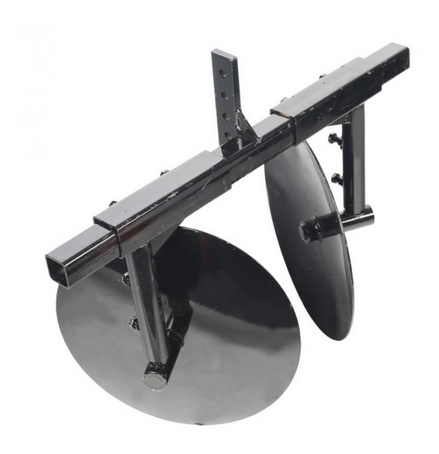

Подробный обзор различных видов окучников для культиваторов. Приведены ключевые критерии выбора устройства, учитывающие тип почвы, высоту культур и совместимость с культиватором.
В мире садоводства и огородничества существует множество инструментов, облегчающих труд земледельцев. Одни помогают бороться с сорняками, другие обеспечивают полив и питание растений. Но есть и такие, которые незаменимы для правильного ухода за культурами на всех этапах их развития.
Одним из таких универсальных помощников является окучник для культиватора – приспособление, предназначенное для окучивания растений. Грамотный выбор этого устройства имеет решающее значение не только для облегчения работы на участке, но и для обеспечения здорового роста и развития растений.

Окучивание – процесс присыпания основания растений рыхлой почвой. Оно защищает корни от солнечных ожогов и пересыхания, а также способствует развитию дополнительных корневых зачатков. Также окучивание помогает уничтожить сорняки и улучшить воздухообмен в почве, что благоприятно сказывается на урожайности.
Виды окучников и критерии выбора
Окучники для культиваторов бывают различных видов, каждый из которых имеет свои особенности. Выбор зависит от типа культиватора, размера участка и вида выращиваемых культур. Рассмотрим наиболее распространенные варианты:
Дисковые окучники. Состоят из двух закрепленных под углом дисков. Подходят для всех видов культур, за исключением высоких. Отличаются простотой конструкции и низкой ценой. Эффективно работают на легких и рыхлых почвах.
Гребневые окучники. Представляют собой изогнутые лопасти, формирующие гребень. Идеальны для окучивания высоких растений (томаты, кукуруза). Позволяют регулировать высоту и ширину гребня. Более дорогие по сравнению с дисковыми.
При выборе окучника учитывайте следующие факторы:
вид почвы на участке - для тяжелых глинистых почв подойдут окучники с острыми дисками или лопастями для лучшего рыхления;
тип культиватора - окучники должны быть совместимы с навесным оборудованием вашего культиватора;
высота окучивания - для низкорослых культур подойдут дисковые окучники, для высоких - гребневые.
Советы по эксплуатации
Для эффективной работы окучника следуйте простым правилам:
устанавливайте угол наклона дисков или лопастей в соответствии с инструкцией для оптимальной производительности;
производите окучивание только на хорошо разрыхленной почве во избежание уплотнения грунта;
регулярно очищайте окучник от налипшей земли и растительных остатков;
соблюдайте осторожность при работе вблизи растений, чтобы не повредить их.
Заключение
Правильно подобранный окучник – залог успешного выращивания культур на вашем участке. Помните, что качественное окучивание позволяет растениям лучше развиваться, защищая их корневую систему. Следуйте нашим рекомендациям, и ваш урожай будет обильным, а труд – легким и приносящим удовольствие.